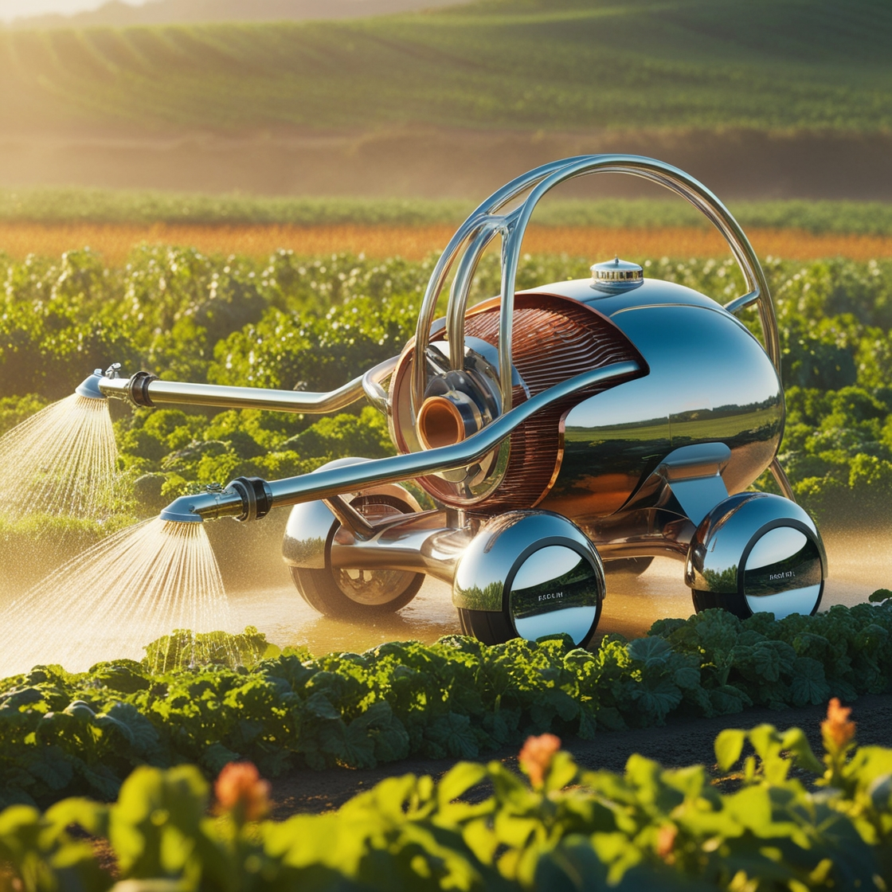

John Deere e Agricultura de Precisão: A empresa John Deere tem sido líder na implementação de tecnologias de agricultura de precisão, como sistemas de orientação por GPS para máquinas agrícolas. Isso permite aos agricultores otimizar o uso de insumos como sementes e fertilizantes, reduzindo custos e melhorando a eficiência. Estudos demonstraram que a agricultura de precisão pode aumentar significativamente os rendimentos das culturas enquanto reduz a quantidade de insumos aplicados.
Caso da Vinícola Torres, Espanha: A Vinícola Torres implementou tecnologias sustentáveis, como energia solar para reduzir a pegada de carbono e sistemas de irrigação de precisão para conservar água. Eles também adotaram práticas de agricultura regenerativa para melhorar a saúde do solo e promover a biodiversidade. Como resultado, conseguiram reduzir os custos operacionais e aumentar a qualidade e consistência dos seus vinhos.
Case IH e Robótica Agrícola: A Case IH desenvolveu robôs autônomos para realizar tarefas agrícolas específicas, como o plantio e a colheita. Esses robôs são capazes de operar de forma autônoma, reduzindo a necessidade de mão de obra e melhorando a eficiência operacional. Agricultores que adotaram essa tecnologia relataram economias significativas de tempo e dinheiro, além de maior precisão nas operações.
Sistema Aquaponic da Growing Underground, Reino Unido: A empresa Growing Underground transformou um antigo abrigo antiaéreo em Londres em uma fazenda aquapônica vertical. Eles cultivam vegetais e peixes em um sistema integrado e fechado, utilizando menos água e espaço em comparação com métodos agrícolas tradicionais. Esse sistema tem sido elogiado por sua eficiência na produção de alimentos frescos e sustentáveis no centro urbano.
Case Study da Indigo Agriculture nos EUA: Indigo Agriculture desenvolveu tecnologias de microbiologia do solo para melhorar a saúde das plantas e aumentar a resiliência das culturas. Eles trabalham com agricultores para aplicar revestimentos de sementes que promovem o crescimento das plantas e aumentam a resistência a estresses ambientais. Agricultores que adotaram essas tecnologias relataram aumentos significativos na produtividade das culturas e na qualidade do solo.